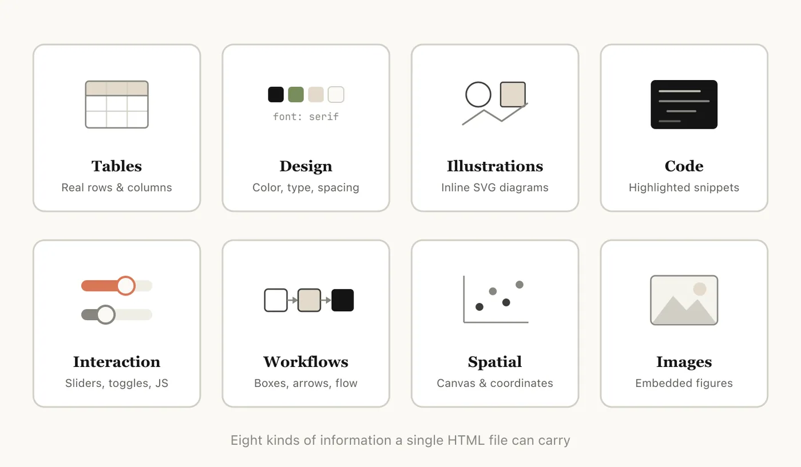
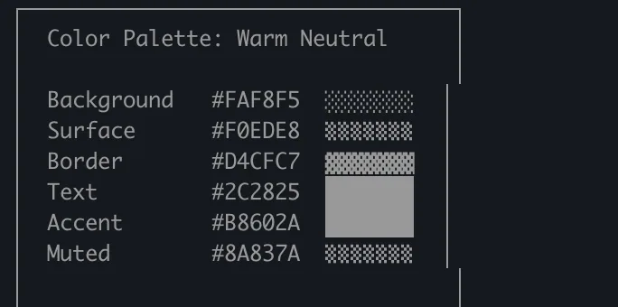
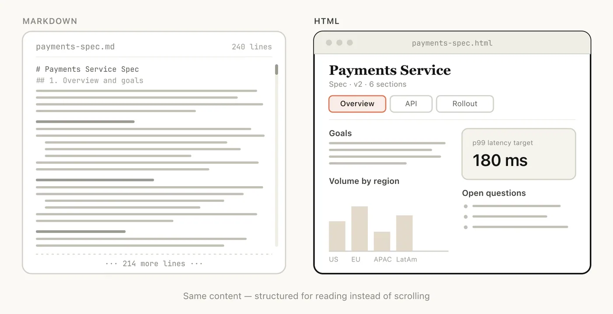
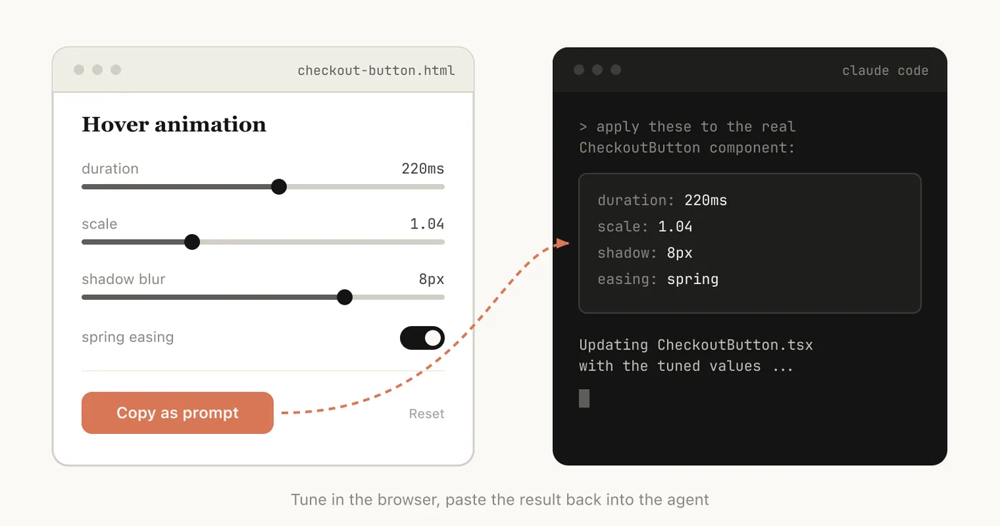
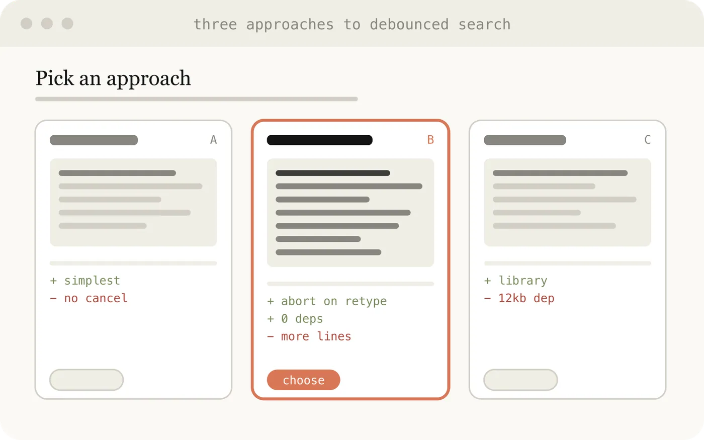
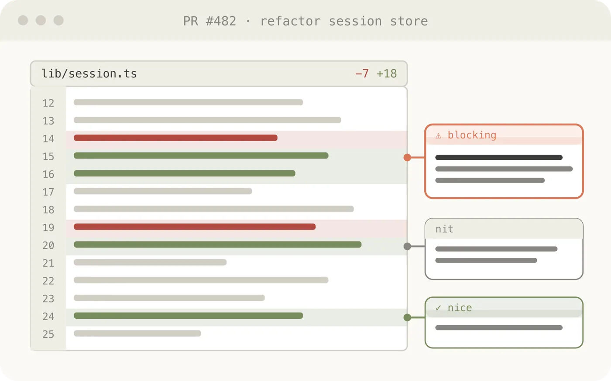
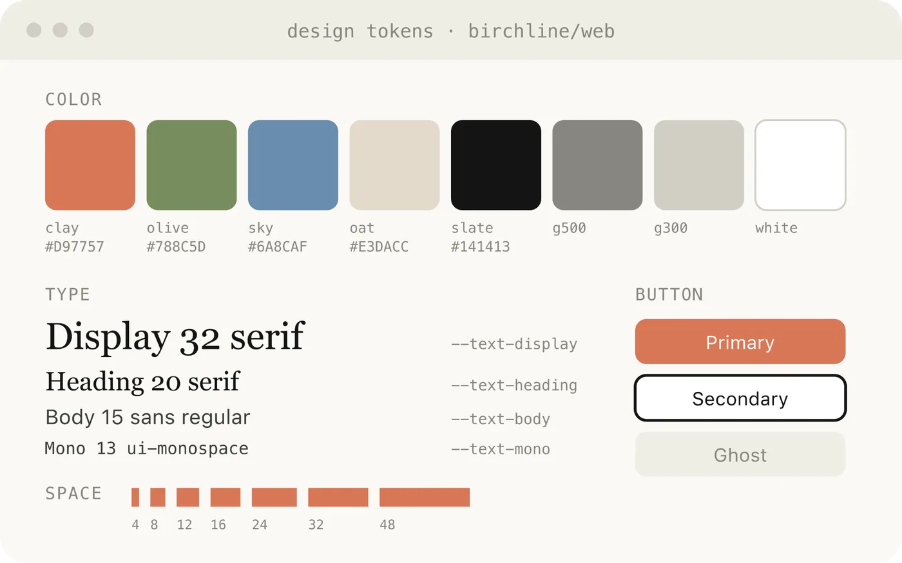
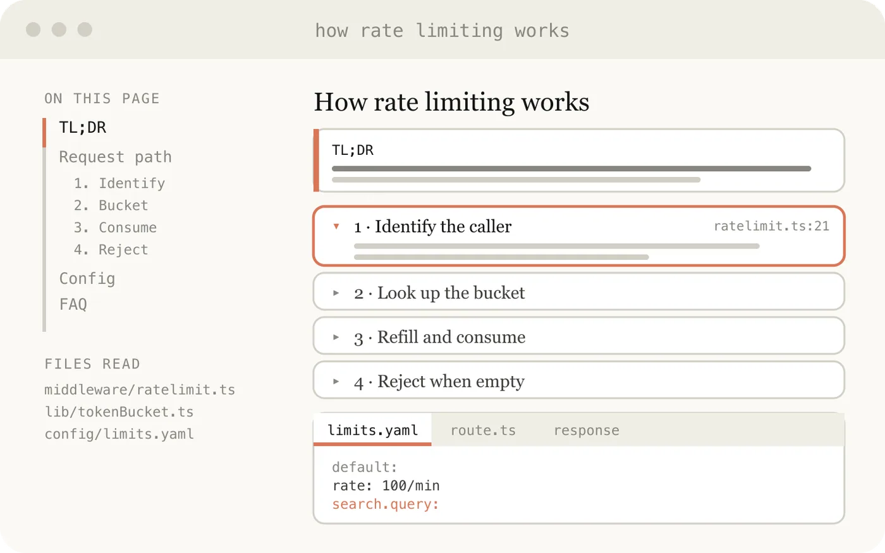
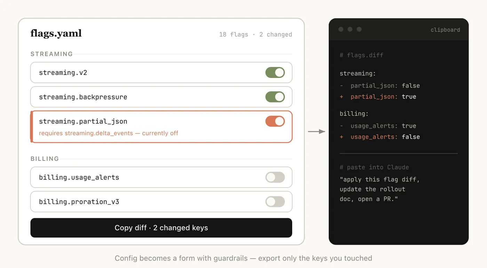

Using Claude Code: The unreasonable effectiveness of HTML
Markdown has become the dominant file format used by agents to communicate with humans. It’s simple, portable, has some rich text capability and is easy to edit. Claude has even gotten surprisingly good at using ASCII to make diagrams inside of Markdown files.
But as agents have become more and more powerful, I’ve found that Markdown has become an increasingly restrictive format. Specifically, I find it difficult to read a Markdown file of more than a hundred lines; I want to use Claude to generate richer visualizations, color and diagrams; and I want to be able to share these outputs more easily.
I also am increasingly not editing these files myself, but using them as specs and reference files. When I do make edits, I’m usually prompting Claude to edit them, which removes one of Markdown’s largest benefits.
Instead, I’ve started preferring HTML as an output format instead of Markdown and increasingly see this pattern being applied by others on the Claude Code team. In this post, I share why and how our team uses HTML to produce richer, more readable Claude Code outputs. If you'd like to follow along, you can start using these HTML file templates for common use cases, too.
Why use HTML?
A few things make HTML a better fit than Markdown for the kind of work I'm now doing with Claude Code, including tasks that require or entail:
Information density

HTML can convey much richer information compared to Markdown. It can, of course, do simple document structure like headers and formatting, but it can also represent all sorts of other information such as:
- Tabular data using tables
- Design data with CSS
- Illustrations with SVG
- Code snippets with script tags
- Interactions using HTML elements with javascript + CSS
- Workflows using SVG and HTML
- Spatial data using absolute positions and canvases
- Images using image tags
In my opinion, there is almost no set of information that Claude can read that you cannot efficiently represent with HTML. This makes it a highly efficient way for the model to communicate in-depth information to you and for you to review it.
I’ve found that in the absence of being able to do this, the model may do more inefficient things in Markdown, like ASCII diagrams or, my favorite, estimating colors with unicode characters.

Visual clarity and ease of reading

As Claude is capable of tackling more complex work, it's also able to write larger and larger specs and plans. I’ve found that I tend to not actually read more than a 100-line Markdown file, and I certainly am not able to get anyone else in my organization to read it.
But HTML documents are much easier to read because Claude can organize the structure visually to be ideal to navigate with tabs, illustrations, and links. It can even be mobile responsive so you can read it differently based on your form factor.
Ease of sharing
Markdown files are fairly hard to share since most browsers do not render them natively well. You often have to add them as attachments to emails or messages.
As long as you upload the HTML file, you can share the link easily. Your colleagues can open it wherever they wish and easily reference it.
The chance of someone actually reading your spec, report, or PR writeup is much higher if it’s in HTML.
Two-way interactions

HTML can also allow you to interact with the document; for example, you might want to ask it to add sliders or knobs to adjust a design or allow you to tweak different options in the algorithm to see what happens. You can also ask it to let you copy these changes into a prompt to paste back into Claude Code.
When useful, this can allow you to create individual editing environments for the specific problem you’re working on.
Data ingestion
One of the biggest reasons to use Claude Code to make HTML files instead of Claude.ai or Claude Design is all of the context Claude Code can ingest. For example, when writing this article, I asked Claude Code to read through my code folder and find all the HTML files I've generated, group and categorize them, and then make an HTML file with diagrams representing each type. The diagrams you see in this article are a direct result of that.
Besides the file system, Claude Code can find additional context using your MCPs (like Slack, Linear, etc.), your web browser (with Claude in Chrome), and your git history.
Getting started
One thing worth noting: you don't need to do much to get Claude to generate HTML like this. You can simply prompt it to " make an HTML file " or " make an HTML artifact." The main thing is knowing what you want the artifact to do and how you might use it. Over time, it may make sense to build a skill around recurring patterns, but starting by prompting from scratch is a good way to get a feel for how it works across different use cases.
Use cases
To make this approach more concrete, below are some example use cases where I think using HTML files make more sense than Markdown. You can also follow along with a GitHub gallery of these use cases, here.
Specs, planning, and exploration
HTML is a rich canvas for Claude to dive into a problem. When I start working on a problem instead of a simple Markdown plan I expect to make a web of HTML files. For example, I might start with asking Claude Code to brainstorm and create some explorations of different options. I would then ask it to expand more into one, maybe make mockups or examples of the type interfaces. Finally, when I feel good I’ll ask it to write an implementation plan. When I’m happy with the plan I’ll create a new session and pass in all of these files for it to implement.
When verifying I’ll also ask the verification agent to read in the files and it will have much broader context on what is needed.

Example prompts:
- I'm not sure what direction to take the onboarding screen. Generate 6 distinctly different approaches—vary layout, tone, and density—and lay them out as a single HTML file in a grid so I can compare them side by side. Label each with the tradeoff it's making.
- Create a thorough implementation plan in a HTML file, be sure to make some mockups, show data flow and add important code snippets I might want to review. Make it easy to read and digest.
Use this for:
- Exploring other ways to implement something in code
- Experimenting with multiple visual designs at once
Code review and understanding
Code can be difficult to read in a Markdown file, but with HTML, we can render diffs, annotations, flowcharts, and modules. Use HTML to understand code that the agent has written, to review code, or to explain a PR to someone reviewing your code.

Example prompt:
Help me review this PR by creating an HTML artifact that describes it. I'm not very familiar with the streaming/backpressure logic, so focus on that. Render the actual diff with inline margin annotations, color-code findings by severity and whatever else might be needed to convey the concept well.
Use this for:
- Creating a PR
- Reviewing a PR
- Understanding a topic in code
Design and prototypes
Claude Design is based on HTML because HTMLis incredibly expressive at design, even if your end surface is not HTML. Claude can sketch out a design in HTML and then write it in your language of choice, be it React, Swift, etc.
You can also prototype interactions, such as animations, actions, etc. Consider asking Claude to make sliders, knobs, etc. to tune in exactly what you’re looking for.

Example prompt:
I want to prototype a new checkout button, when clicked it does a play animation and then turns purple quickly. Create a HTML file with several sliders and options for me to try different options on this animation, give me a copy button to copy the parameters that worked well.
Use this for:
- Creating design system artifacts
- Adjusting components
- Visualizing component libraries
- Prototyping animations
Reports, research, and learning
Claude Code is very effective at synthesizing information across multiple data sources and converting it into a report for readability. You can prompt Claude to search your Slack, your codebase, git history, or the internet and use it to generate easy to read reports..
You could assemble this in the form of a long HTML document, an interactive explainer or even a slideshow/deck. Ask Claude to use SVG for diagrams to help visualize it.

Example prompt:
I don't understand how our rate limiter actually works. Read the relevant code and produce a single HTML explainer page: a diagram of the token-bucket flow, the 3–4 key code snippets annotated, and a "gotchas" section at the bottom. Optimize it for someone reading it once.
Use this for:
- Writing feature summarizations
- Generating explainers
- Drafting weekly status reports
- Creating incident reports
- Producing SVG illustrations, flowcharts, and technical diagrams,
Custom editing interfaces
Sometimes it’s hard to describe what you want purely in a text box. For this use case, I'll often ask Claude to build me a throwaway editor for the exact thing I'm working on: not a product, or a reusable tool, but a single HTML file, purpose-built for this one piece of data.
The trick is always to end with an export: a "copy as JSON" or "copy as prompt" button that turns whatever I did in the UI back into something I can paste into Claude Code or commit to a file. You stay in the loop, but the loop gets much tighter.

Example prompts:
- I need to reprioritize these 30 Linear tickets. Make me an HTML file with each ticket as a draggable card across Now / Next / Later / Cut columns. Pre-sort them by your best guess. Add a "copy as Markdown" button that exports the final ordering with a one-line rationale per bucket.
- Here's our feature flag config. Build a form-based editor for it, group flags by area, show dependencies between them, warn me if I enable a flag whose prerequisite is off. Add a "copy diff" button that gives me just the changed keys.
- I'm tuning this system prompt. Make a side-by-side editor: editable prompt on the left with the variable slots highlighted, three sample inputs on the right that re-render the filled template live. Add a character/token counter and a copy button.
Use this for:
- Reordering, triaging, or bucketing anything (tickets, test cases, feedback)
- Editing structured config (feature flags, env vars, JSON/YAML with constraints)
- Tuning prompts, templates, or copy with live preview
- Curating datasets — approve/reject rows, tag examples, export the selection
- Annotating a document, transcript, or diff and exporting the annotations
- Picking values that are painful to express in text: colors, easing curves, crop regions, cron schedules, regexes
Frequently asked questions
These are the questions I get asked most often about using HTML with Claude Code, paired with the practical, day-to-day habits I've landed on:
Isn’t it less efficient?
While Markdown often uses fewer tokens, I’ve found that the added expressiveness of HTML and the much higher likelihood of me reading it means I get overall better output. With the 1MM context window in Opus 4.7, the increased token usage is not really noticeable in the context window.
When do you use Markdown for now?
I have honestly stopped using Markdown altogether for almost everything, but I’m probably far on the HTML maximalist side of things.
Is this how you’ve replaced planning?
I’ve found that instead of having a single plan, I tend to have a few different HTML files for different parts/stages of the plan. For example, I may make an implementation plan in HTML and then do another file for exploration of UIs, and then finally make a HTML component that lists every design. I tend to keep these files around as references for the future, as well for use in verification.
Staying in the loop with Claude
All of the above is to say that the real reason I use HTML instead of Markdown is that it helps me feel much more in the loop with Claude. As Claude takes on more, I'd noticed I was reading plans less closely, and I wanted a way to stay engaged with its choices rather than just hand them off. HTML turned out to be exactly that. I feel more in the loop now than I ever did before."
Get started with Claude Code.
This article was written by Thariq Shihipar, member of technical staff, and expresses his personal opinions – and affinity – for using HTML files with Claude Code.